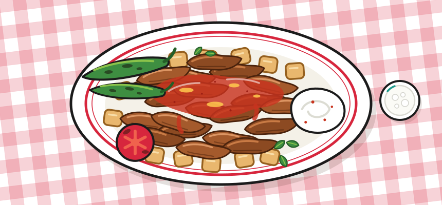
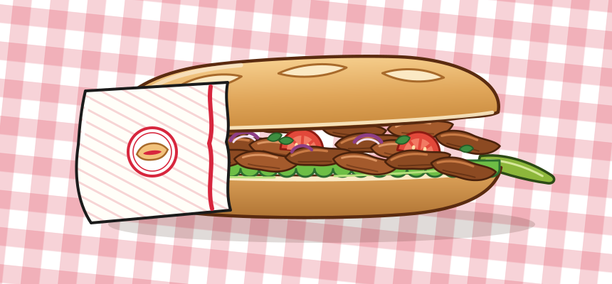
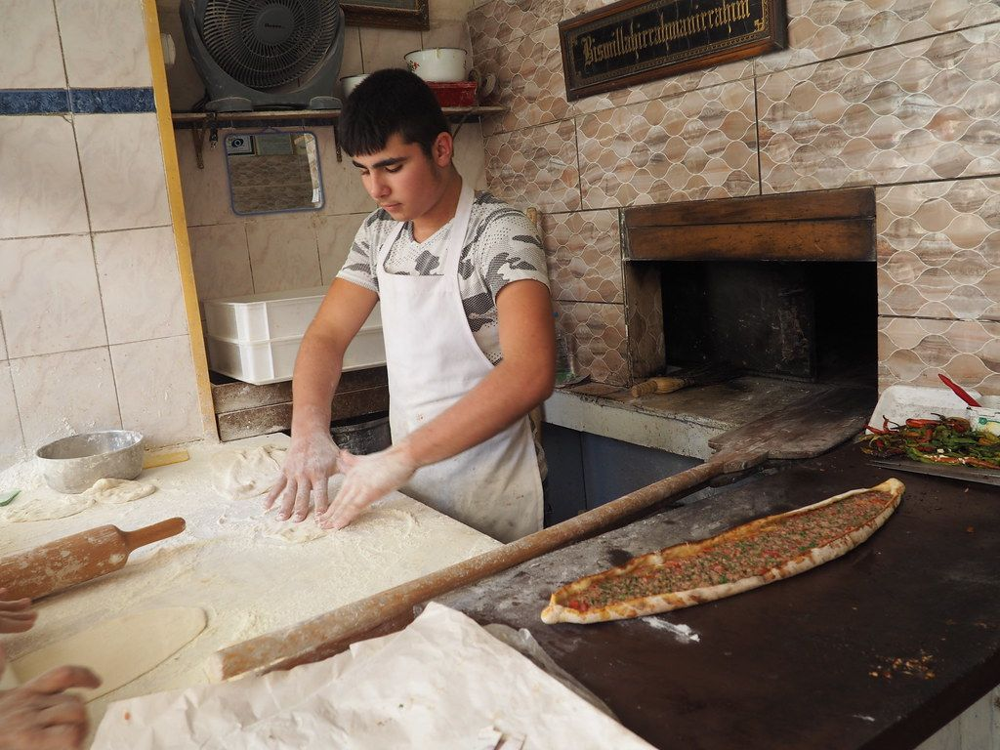
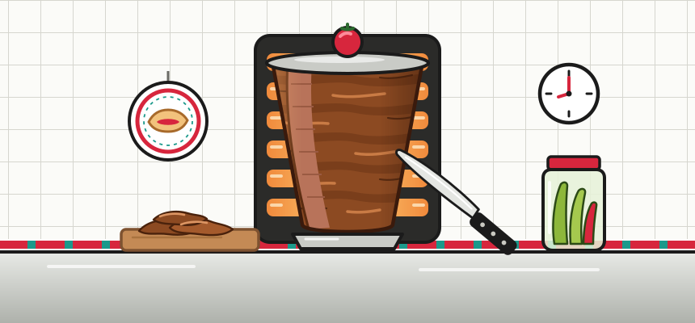

ŞişliMecidiyeköyFulya Sokak, Erse Han
Pide fırından, döner şişten, çorba kazandan.
Bahar Pide Salonu'nda güne sıcak bir çorbayla başlayabilir, öğle arasında ofisinize paket isteyebilirsiniz. Adetleri seçin, siparişiniz WhatsApp mesajı olarak hazır olsun.




Kaşarlı ve kıymalı pide
Temsili görsel · Fotoğraf: jorge.cancela, CC BY 2.0
Üç tezgâh, tek salon
Google'da Pideci, Dönerci ve Çorbacı olarak listeleniyoruz. Panoda bu üç tezgâhta tipik olarak bulunan lezzetler var; günün durumunu sormanız yeterli.
Pide
- Kıymalı pideSoğanlı, biberli kıyma harcı; kenarı kıvrık kayık hamur.
- Kuşbaşılı pideKüçük doğranmış et, domates ve biberle.
- Kaşarlı pideBol kaşar; isterseniz üstüne yumurta.
- Lahmacunİnce hamur, kıymalı harç; limon ve maydanozla.
Döner
- Dürüm dönerLavaşa sarılı; ofiste elde yemesi kolay.
- Porsiyon dönerTabakta, yanında közlenmiş biber ve soğan.
- Pilav üstü dönerTereyağlı pilavın üstünde ince kesim döner.
- Ekmek arası dönerYarım ekmek ya da pide ekmeği arasında.
Çorba
- Mercimek çorbasıLimon ve pul biberle; sabahların klasiği.
- Ezogelin çorbasıKırmızı mercimek, bulgur ve nane.
- Tavuk suyu çorbaŞehriyeli ya da terbiyeli.
- Yayla çorbasıYoğurtlu, pirinçli, naneli.
Panodaki kalemler bu tür salonlarda tipik olan örneklerdir, fiyat yazılmamıştır. Güncel menü için sorun, bilgi verelim.
Menü panosunun tamamıÖğle paketi fişi
Ofiste kim ne istiyor? Adetleri artırın; fiş siz seçtikçe yazılsın, tek dokunuşla WhatsApp'a gitsin.
- Gönderilecek mesaj, fişte harfi harfine görünür.
- WhatsApp kullanmıyorsanız mesajı kopyalayıp arayarak da iletebilirsiniz.
- Adres, tercih ve kişi sayısı için ayrıntılı paket sayfasını kullanın; seçtiğiniz adetler orada da hazır bekler.
Adetler
- Kıymalı pide0
- Kaşarlı pide0
- Lahmacun0
- Dürüm döner0
- Mercimek çorbası0
- Ayran0
Fiş boş. Adetleri artırdıkça sipariş mesajınız burada yazılır.
Salonda bir gün
Kapı Pazartesi'den Cumartesi'ye 08:00'de açılır, 21:00'de kapanır. Çizgideki işaret İstanbul saatine göre şu anı gösterir.
- Sabah
- Öğle telaşı
- Öğleden sonra ve akşam
Pazartesi–Cumartesi 08:00–21:00
- Pzt08–21
- Sal08–21
- Çar08–21
- Per08–21
- Cum08–21
- Cmt08–21
- PazKapalı
Kapı açılır
Güne sıcak bir çorbayla başlamak isteyenler için sabah erkenden açığız.
Öğle telaşı
Mecidiyeköy'ün ofisleri öğle arasına çıkar. Paket siparişinizi saatini belirterek önceden yazmak işinizi kolaylaştırır.
Toplantı ikramı
Dilimli pide paylaşması kolay bir ikramdır. Kişi sayısını toplu yemek sayfasında planlayın.
Kapanış
İşten çıkarken paket almak için akşam dokuza kadar buradayız. Pazar günü dinleniyoruz.
Pide neden kayığa benzer?
Açık pidede hamur uzunca açılır, harç ortaya yayılır, kenarlar içe kıvrılıp uçlar burulur. Pişerken kıvrık kenar kabarır ve harcı tutar; adı da biçimi de buradan gelir.
Hamur açılır
Bezelere ayrılan hamur, oklavayla ya da elle uzun bir oval olacak biçimde açılır.
Harç yayılır
Kıyma, kuşbaşı ya da kaşar; harç kenarlarda bir parmak boşluk bırakılarak dağıtılır.
Kenar kıvrılır, uç burulur
Kenarlar içe katlanır, iki uç bükülerek kapatılır. Kayık fırına kürekle girer, kürekle çıkar.

Ofisiniz için iki yol
Birkaç kişilik bir öğle siparişi mi, kalabalık bir toplantı mı? İhtiyacınıza göre hazırlanan iki sayfadan birini seçin.
Erse Han, Fulya Sokak
Mecidiyeköy Mahallesi, Fulya Sk. Erse Han D:3/5, 34394 Şişli/İstanbulPazartesi–Cumartesi 08:00–21:00, Pazar kapalı.

Sık sorulanlar
Kaçta açıksınız?
Pazartesi'den Cumartesi'ye 08:00–21:00 arası açığız; Pazar günleri kapalıyız.
Paket sipariş nasıl verilir?
Telefonla arayabilir ya da WhatsApp'tan yazabilirsiniz. Paket sipariş sayfasındaki fiş, adetleri seçtiğinizde mesajı sizin için hazırlar. Adrese teslim isterseniz adresinizi yazın, uygunluğu size bildirelim.
Günün çorbalarını nasıl öğrenirim?
Kazandaki çorbalar güne göre değişebilir. WhatsApp'tan "bugün hangi çorbalar var?" diye sorun, bilgi verelim.
Fiyatları nereden görebilirim?
Bu sitede fiyat yer almıyor. Güncel fiyatlar için arayın ya da WhatsApp'tan sorun; sipariş mesajınızda tutarı yazmamızı da rica edebilirsiniz.
Kalabalık bir toplantı için yemek istesek?
Toplu yemek sayfasında kişi sayısına göre bir öneri listesi çıkarıp talebinizi iletebilirsiniz; uygunluğu ve ayrıntıları birlikte netleştiririz.